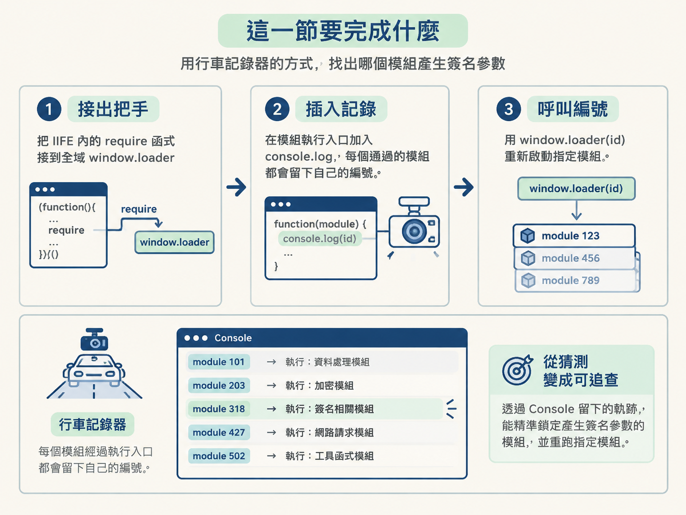
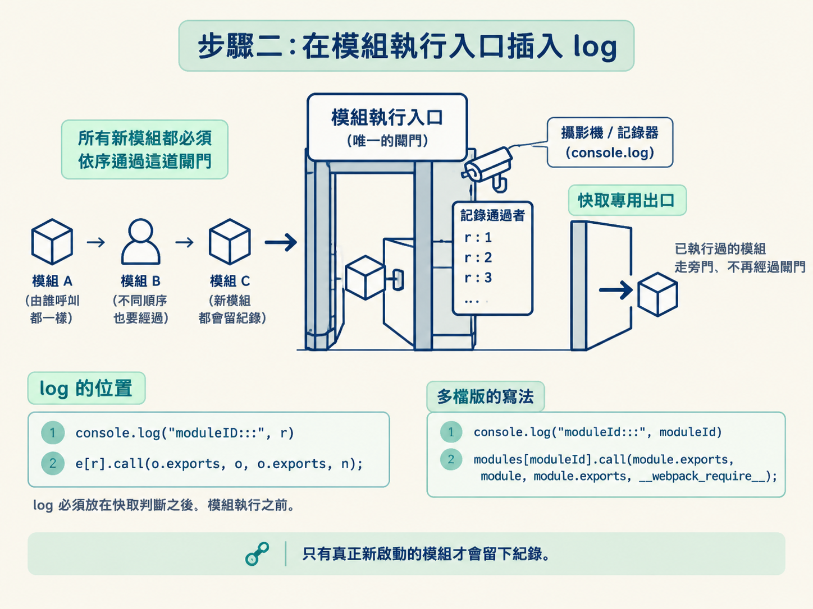
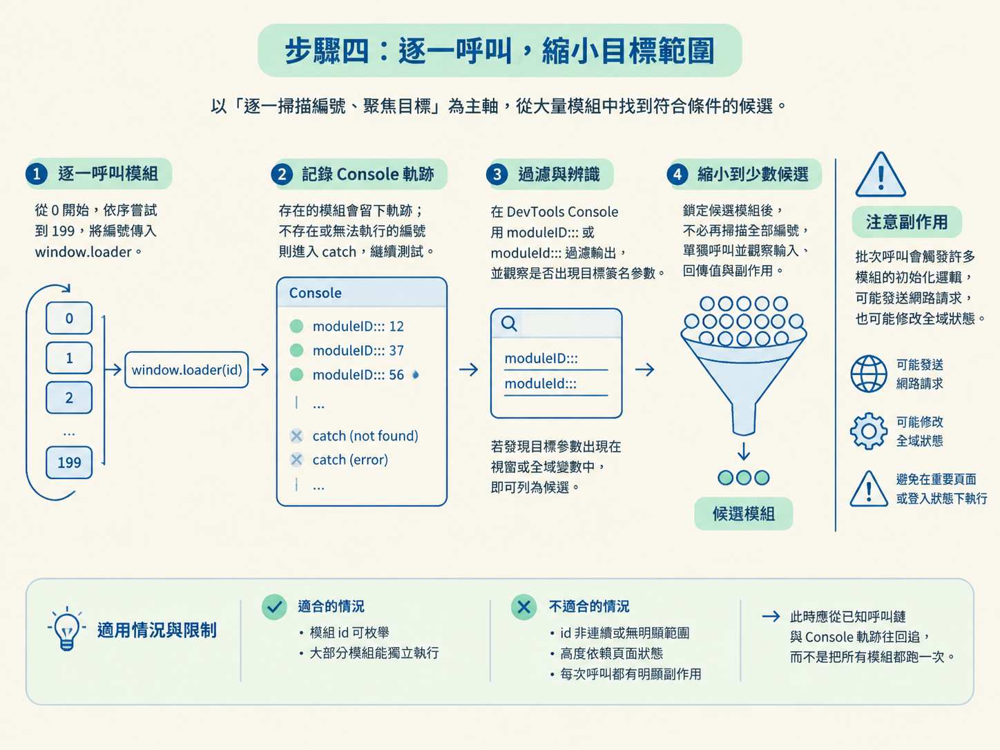

當一般抓取卡在簽名參數時，流程通常會從「送出請求」走到「確認反爬參數」，最後進入 bundle 逆向。現在你已經走到逆向階段，接下來要解決的問題很明確：究竟是哪一個 webpack 模組產生了簽名參數？
這一節會把 bundle 裡的 require 函式接到 window.loader，再於模組執行前加入一行 console.log。之後便能用 window.loader(id) 呼叫模組，根據 Console 留下的軌跡逐步鎖定目標。
整套操作就像替 webpack 裝上一台行車記錄器：每個模組經過執行入口時，都會留下自己的編號。做完後，你會得到一份可追查的模組執行紀錄，也能精準重跑特定模組。
前置條件：你手上的打包檔已經可以載入 Node 執行。最小情況是先設定 window = global，再 require loader 檔。如果 JavaScript 因為依賴瀏覽器物件而報錯，那屬於補環境的範圍；這一節先專注於「接出 loader、插入 log、呼叫模組」三件事。

先用 DevTools 或編輯器打開 loader 檔，搜尋 window.loader。多數已經處理過的 webpack 打包檔，會把內部的 require 函式指定給這個全域變數。
以下是物件版 loader。內部的 require 函式叫作 n，最後一行則把它接到 window.loader：
!function (e) {
var t = {};
// 加载函数
function n(r) {
if (t[r])
return t[r].exports;
var o = t[r] = {
i: r,
l: !1,
exports: {}
};
e[r].call(o.exports, o, o.exports, n);
return o.exports.exports; // 返回 o.exports.exports，而不是整个 o.exports 对象
}
n.a = function () {
}
n.b = function () {
}
window.loader = n看到 window.loader = n，就表示操作模組的把手已經露在外面，不需要再修改這一段。多檔版 bootstrap 的做法相同，只是函式名稱通常是 __webpack_require__，因此會看到 window.loader = __webpack_require__。
如果完全搜不到 window.loader，表示這份打包檔沒有主動暴露載入器。這時才需要在 require 函式定義完成後，補上 window.loader = n;；其中的 n 必須換成實際的函式名稱。
完成這一步後，可以先在 Console 檢查 window.loader。預期應該得到一個函式，而不是 undefined。
這個方法適合你已經找到 webpack require 函式的情況。如果 bundle 尚未成功執行，或真正的模組仍放在尚未載入的其他檔案中，只有暴露 loader 還不夠，必須先處理執行環境或載入缺少的模組。
接下來要替 loader 裝上記錄器。找到 require 函式裡真正呼叫模組的那一行，並在正上方加入 console.log，把收到的模組 id 印出來。
物件版的模組執行點是 e[r].call(...)。第一行記錄即將執行的 r，第二行才真正呼叫模組：
console.log("moduleID:::", r)
e[r].call(o.exports, o, o.exports, n);多檔版的插入位置相同，只是模組編號的變數名稱改成 moduleId：
console.log("moduleId:::", moduleId)
modules[moduleId].call(module.exports, module, module.exports, __webpack_require__);log 必須放在快取判斷之後、模組執行之前。這裡是所有新模組都必須通過的入口，就像大樓唯一的閘門；無論模組由誰呼叫、以什麼順序執行，都會在這裡留下編號。

放在快取判斷之後還有一個好處：已經執行並存入快取的模組不會重複留下紀錄。Console 顯示的是這次真正啟動的新模組，軌跡會比較乾淨。
"moduleID:::" 或 "moduleId:::" 這類固定前綴也不要隨意省略。操作時可以在 DevTools Console 輸入關鍵字過濾，只查看模組軌跡，不必在大量輸出裡撈針。
記錄器裝好後，先挑一個已知存在的 id 做單次測試。物件版原始碼示範的呼叫方式如下：
window.loader("1002")執行後，Console 會先顯示我們插入的 moduleID::: 1002，接著出現模組 "1002" 自己輸出的 bar。這代表 loader 已經收到 id，並順利執行對應模組。
如果還想檢查模組交出的結果，可以直接把 window.loader 的回傳值印出來：
console.log(window.loader("1001"))判讀時要把兩件事連在一起看：你傳入哪個 id，第一筆軌跡就會顯示哪個 id；緊接在後面的輸出，則來自該模組本身。如此一來，「呼叫了哪個模組」與「它產生了什麼」便能互相對照。
如果呼叫後沒有再次看到軌跡，不一定代表失敗。該模組可能已經執行過，require 函式直接從快取回傳結果，因此不會再次經過模組執行入口。
先注意副作用：批次呼叫會啟動許多模組的初始化邏輯，可能送出網路請求，也可能修改全域狀態。不要直接在重要或帶有登入狀態的頁面裡無條件執行。較穩妥的做法，是在乾淨頁面或獨立 Node 環境中測試。
真實站點可能包含幾十到上百個模組。若 id 有合理範圍，可以用迴圈逐一嘗試，讓 Console 自動排出存在的模組。下面是輔助用的迴圈，不是原始碼的一部分：
for (let id = 0; id < 200; id++) {
try {
window.loader(id);
} catch (e) {
// 不存在的編號會報錯，略過
}
}這段程式會依序把 0 到 199 傳給 window.loader。存在的模組會留下軌跡；不存在或無法獨立執行的編號則會進入 catch，讓迴圈繼續往下測試。
跑完後，在 DevTools Console 用 moduleID::: 或 moduleId::: 過濾輸出，再觀察哪個模組執行後出現了你關心的簽名參數。例如，若某個 id 執行後，目標參數出現在視窗或全域變數上，就可以先把該 id 列為候選。
鎖定候選模組後，不必繼續掃描全部編號。改成單獨呼叫該 id，反覆觀察它接收的輸入、回傳值與副作用，範圍會縮得更快。
批次掃描適合模組 id 可枚舉，而且大部分模組能獨立執行的情況。如果模組編號不是連續數字、執行時高度依賴頁面狀態，或每次呼叫都可能觸發明顯副作用，就不適合直接暴力掃描。這時應從已知呼叫鏈與 Console 軌跡往回追，而不是把所有模組都跑一次。

完成操作後，先確認 Console 裡有一份清楚的模組軌跡。每一行 moduleID::: 或 moduleId::: 後面都跟著一個編號，代表該模組在那個時間點真正進入執行。
接著確認你能使用 window.loader("某個編號") 呼叫候選模組，並觀察它的輸出或回傳值。若某個模組與目標簽名參數穩定對得上，就已經把原本模糊的 bundle 縮小成可以反覆研究的單一入口。
接出把手（window.loader）、插入記錄（模組執行前的 log）、呼叫編號（window.loader(id)）。這三步能把「哪個模組產生了目標值」從猜測變成有軌跡可查的操作。
對單檔 bundle 而言，做到這裡通常已經足夠。如果面對的是多檔 JSONP 版，只有 loader 還不能取得完整模組，因為其他模組仍躺在不同檔案裡。下一節會把相關檔案一起搬進 Node，完整執行多檔 bundle。